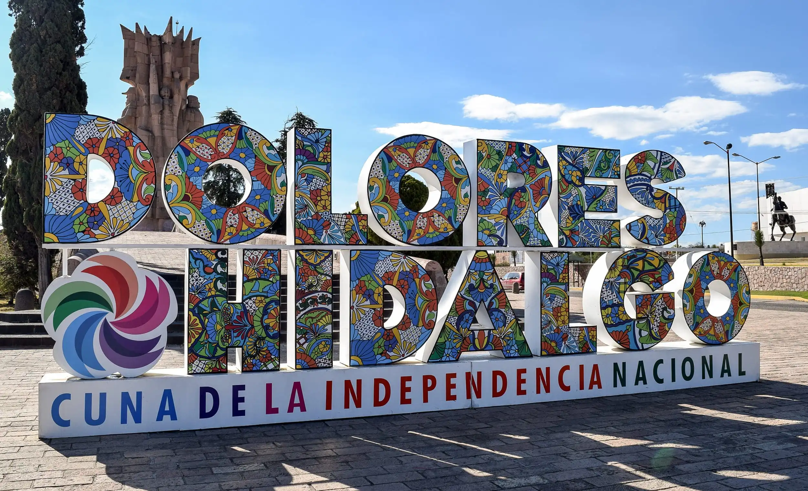
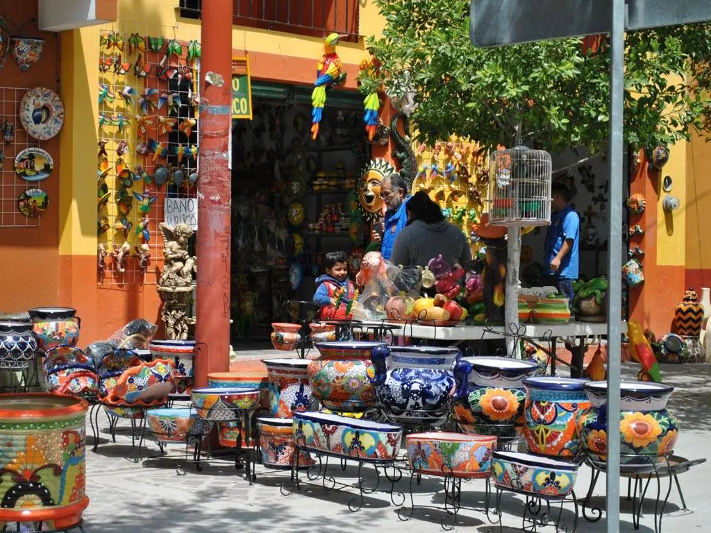
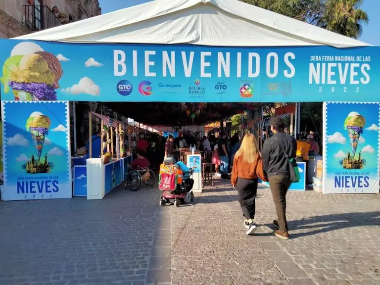
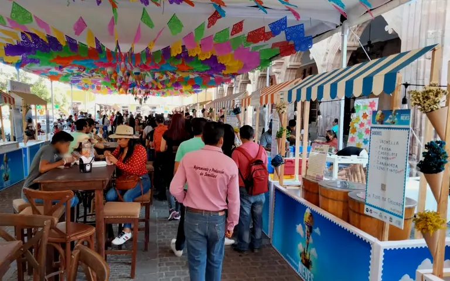
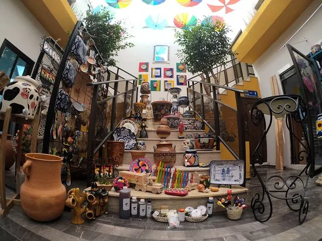
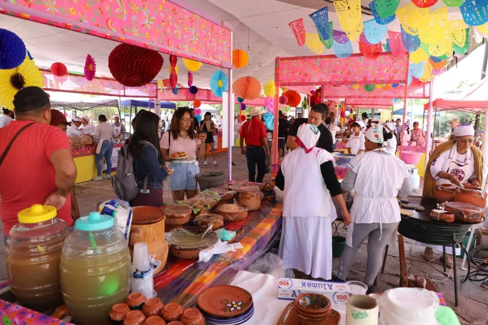

Get to know the location area of our chamber of commerce!

Welcome to the city sign.

Main source of commerce in the city: Ceramics.

The international ice cream fair: One of the most important events in the city.

The international ice cream fair is one of the best events where local commerce has the opportunity to grow.

Within the city there is a wide variety of shopping malls focused on the sale of ceramics.

During the rest of the year, there are a variety of events where local merchants and those from other parts of the state can set up business.
Dolores Hidalgo demographic data.
Dolores Hidalgo is a municipality in the state of Guanajuato, Mexico, which is considered the cradle of national independence. Its total population, according to the 2020 Population and Housing Census, is 163,038 inhabitants12. Of them, 86,327 are women and 76,711 are men, which means that for every 100 women there are 88.86 men.